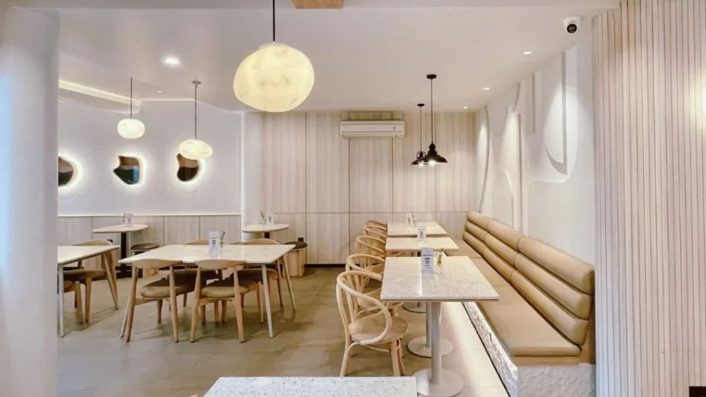

SPECIALTY COFFEE & CO-WORKING SPACE
Quiet Corner
Ruang nyaman tempat mengalirnya ide, harumnya racikan kopi segar, dan atmosfer tenang yang mendukung produktivitas Anda.
Tentang Kami

Ruang tenang di tengah kota
Quiet Corner adalah kedai kopi dan co-working space yang menyajikan kopi pilihan dari petani lokal dalam suasana hangat dan tenang. Cocok untuk bekerja, belajar, atau sekadar bersantai bersama teman.
- Wi-Fi cepat dan gratis
- Colokan listrik di setiap meja
- Area indoor ber-AC dan semi-outdoor
Quiet Corner berdiri tahun 2024 dari keinginan membuat
tempat ngopi yang nyaman untuk mahasiswa dan pekerja muda.
Senin sampai Jumat 08.00-22.00 WIB, Sabtu dan Minggu 09.00-23.00 WIB.
Jl. Backburner No. 1, Kediri. Hubungi kami lewat halaman Reservasi.